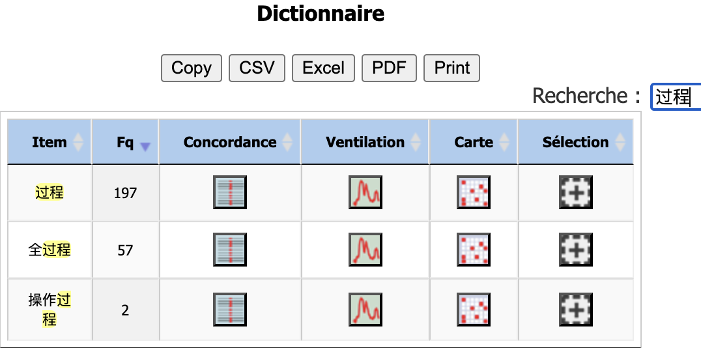

Chinois
Pour générer le nuage de mots, j'ai regroupé les données textuelles issues du 50 urls sélectionnées en fonction de leur pertinence pour le contexte éducatif et social. Ensuite, j’ai appliqué une segmentation lexicale à l’aide de la bibliothèque Jieba qui est adaptée à la langue chinois, et filtré les mots vides grâce à une liste de mots vides enregistrée dans le fichier stopwords_ch.txt. J’ai enfin enregistré les textes nettoyés dans un fichier dumps-text-ch_seg.txt. Ces étapes permettent d’éliminer les bruits et de conserver des termes pertinents pour l’analyse.
Pour représenter visuellement les résultats, j'ai choisi un chapeau de diplômé comme forme du nuage de mots. Cette forme représente à la fois le domaine éducatif et les notions de dépassement de soi, de cheminement et de développement personnel, en adéquation avec les significations de “课程” (cours) et “过程” (processus) dans la langue chinoise.

Selon le nuage de mots généré à partir des données filtrées, nous pouvons analyser la fréquence des mots dans notre corpus chinois. Parmi les termes les plus fréquents, on retrouve “课程” (cours), “教育” (éducation), et “学校” (école), “学生” (étudiants). Ces mots montrent la forte corrélation entre “course” et le système éducatif dans la langue chinoise. Par ailleurs, des termes comme “发展” (développement), “建设” (construction) et “训练” (entraînement) montrent que “course” en chinois ne se limite pas à un concept éducatif, mais inclut également des notions dynamiques de développement et de progrès. Cette particularité démontre la flexibilité du système linguistique chinois, qui associe les idées d’apprentissage et de développement à des concepts plus vastes de transformation et de croissance sociale.
Chinois
J’ai commencé par charger mon fichier nettoyé (dumps-text-ch_seg.txt) dans le site iTrameur pour effectuer une première analyse lexicale. Après avoir observé le dictionnaire des formes, j’ai remarqué que “课程” (cours) est le mot le plus fréquent avec une occurence de 1637 fois. La fréquence élevée confirme son rôle central dans le corpus chinois dans le corpus chinois et son lien avec les sujets éducatifs.

Ensuite, dans le dictionnaire des formes, j’ai utilisé la barre de recherche pour me concentrer sur “课程” et j’ai trouvé plusieurs composés lexicaux associés à ce terme tels que “课程内容” (contenu des cours, 61 fois), “新课程” (nouveaux cours, 38 fois), “课程体系” (système des cours, 38 fois) et “课程标准” (normes des cours, 35 fois). Cela montre que le mot “课程” est utilisé également dans des contextes institutionnels plus larges, et que sa signification est fortement liée à des aspects comme la réforme éducative, la planification et la structuration des apprentissages. Ces composés indiquent une tendance vers la standardisation et la systématisation de l’éducation dans le contexte chinois.
Par ailleurs, j’ai aussi effectué une recherche sur la seconde signification “过程” (processus) du terme “course”. Avec une fréquence de 197 fois, le mot “过程” est moins représenté dans le corpus, ce qui montre également que cette signification est utilisée comme un complément dans la langue chinoise. Parmi ses cooccurrences, on trouve ”全过程” (processus entier, 57 fois), qui met l’accent sur des étapes complètes ou des projets globaux. Cela représente une vision dynamique du mot, où “过程” est souvent utilisé pour illustré des progressions ou des actions continues.
Afin d’aller plus loin, j’ai sélectionné le mot “课程” comme cible et j’ai eu ses cooccurrences qui montrent plusieurs aspects dans la langue chinoise. Par exemple, le mot “学科” (discipline) souligne l’organisation des cours autour des matières spécifiques. Les mots “在线” (en ligne) et “开放” (ouvert) montrent la transformation de l’éducation avec l’intégration des technologies modernes, notamment à travers les MOOC (cours en ligne ouverts à tous). La cooccurrence avec “资源” (ressources) indique que “课程” n’est pas limité à son contenu pédagogique, il inclut également une gestion des ressources éducatives, telles que les plateformes en ligne, les enseignements, ou les infrastructures.
Parmi ces cooccurrences, j’en ai choisi deux pour observer les contextes : “学科” et “在线”, parce que le premier représente une organisation académique traditionnelle, tandis que le second montre l’évolution technologique dans l’education.
Outre les usages que nous avons analysés avant, nous observons que les contextes mentionnent également les “活动” (activités). Cela montre que dans le système éducatif chinois, les cours intègrent des dimensions pratiques ou expérimentales outre des connaissances théoriques.
J’ai aussi observé le contexte de “在线” (en ligne) et trouvé que ce mot apparaît simultanément avec une autre cooccurrence “开放”, ce qui confirme mon analyse précédente. Des termes comme “教学管理” (gestion pédagogique) mettent en avant les défis associés à la planification et à la supervision des cours en ligne. Cela montre une complexité croissante dans l’organisation des cours numériques.